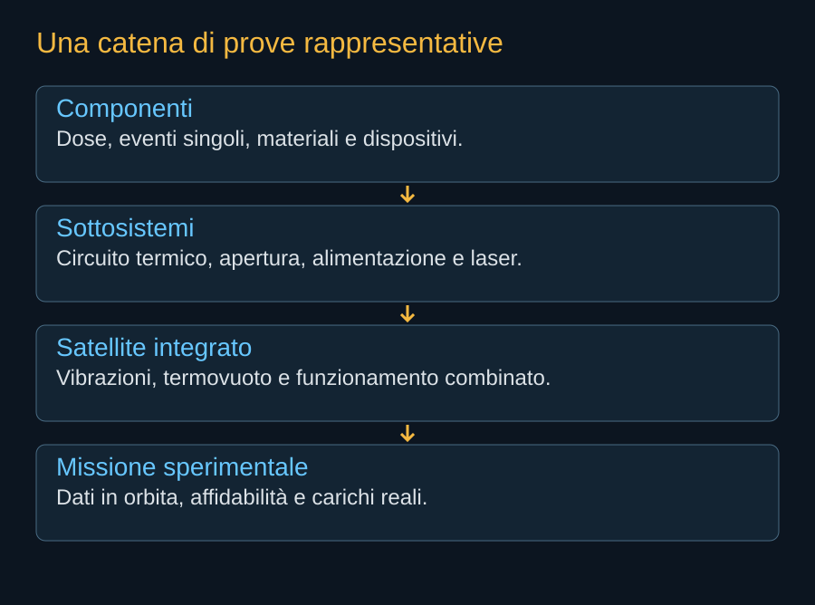

Il satellite deve superare ambienti molto diversi senza cambiare identità. A terra può essere alimentato e raffreddato da impianti di prova. Sul razzo incontra sollecitazioni intense. In orbita deve lavorare con le risorse che ha portato e con la rete disponibile. Una campagna di qualificazione serve a dimostrare che queste transizioni non aprano percorsi di guasto imprevisti.

Partire dai componenti
Le prove dei componenti permettono di misurare ciò che un catalogo terrestre non dichiara per la missione spaziale. Un processore può richiedere test di dose ed eventi singoli. Un rivestimento può cambiare proprietà dopo esposizione e cicli termici. Un dispositivo di apertura può comportarsi diversamente dopo un lungo periodo ripiegato. La scelta dei campioni deve essere rappresentativa di ciò che volerà.
Il risultato di una prova dipende dalle condizioni. Dire che un chip “ha superato il test” senza indicare carico, esposizione e criterio di successo rende difficile usare quel dato. Una prova può cercare la soglia di danno, un’altra verificare funzionamento nominale. Servono entrambe, ma rispondono a domande differenti.


Termovuoto: far lavorare il sistema
Una camera termovuoto riduce la pressione e impone condizioni termiche controllate. Il satellite o un sottosistema possono essere messi in funzione, osservando temperature e transitori. Per un payload informatico, il carico software deve produrre un profilo rappresentativo. Una macchina in attesa non sollecita il sistema termico come un lungo calcolo ad alta potenza.
Le grandi strutture complicano la prova. Una camera potrebbe non ospitare l’intera apertura del satellite; parti del comportamento vanno allora verificate con prove separate e modelli correlati. Questo non rende la campagna inutile, ma richiede spiegare come le evidenze vengano combinate e quali incertezze restino.
Il lancio e ciò che può lasciare dietro di sé
Vibrazioni e carichi acustici possono danneggiare collegamenti o produrre effetti che emergono soltanto quando il satellite si apre. Per questo sono importanti verifiche prima e dopo le sollecitazioni. Un apparato che si accende al termine di una prova meccanica non dimostra necessariamente che ogni funzione mantenga margini sufficienti.
Anche i collegamenti ottici devono essere provati con il controllo del satellite. Servono scenari di acquisizione, perdita del corrispondente e recupero. Il trasferimento di dati non va separato dal ruolo dei laser nel governo del veicolo. Una campagna integrata cerca proprio i problemi che restano invisibili nelle prove di apparati isolati.
Il dimostratore deve produrre misure
La prima missione utile non deve soltanto fotografare il satellite dispiegato. Deve misurare energia, calore, comunicazioni, errori e lavoro eseguito. Un insieme di carichi pianificati può mostrare come il nodo si comporti in condizioni diverse. La durata permette di osservare degrado e variazioni dell’ambiente.
Un successo dimostrativo permette di correggere il modello industriale. Una modifica significativa introdotta dopo la prova può però richiedere altre verifiche: cambiare processori o circuito termico può ridurre la rappresentatività del primo veicolo. L’iterazione rapida è utile quando conserva una relazione leggibile fra ciò che è stato provato e ciò che si sta costruendo.
Nell’edizione corrente non attribuiamo ad AI1 prove concluse che non siano documentate pubblicamente. La proposta e i suoi partner sono identificabili; il percorso di qualificazione completo non è pubblicato. Il prossimo avanzamento dovrà essere raccontato a partire dai dati e dalla configurazione alla quale si riferiscono.
Fonti pubbliche e tracce
- NASA NESC, assicurazione di resistenza alle radiazioni. 2022: definizione dell’ambiente, test dei componenti e progettazione del sistema. L’orbita e la durata modificano i requisiti.
- NASA, stato dell’arte: controllo termico. Riferimento per bilancio termico, superfici radianti e trasferimento del calore. Grafici e dimensionamenti nel libro sono esempi semplificati, non una ricostruzione del progetto SpaceX.
- NASA, strutture e meccanismi dei piccoli satelliti. Riferimento generale per integrazione e strutture dispiegabili; non specifica i meccanismi Starmind.
- NVIDIA, SpaceXAI e prima generazione Starmind. 24 agosto 2026. Conferma l’adattamento di Vera Rubin NVL72; non pubblica una distinta completa del satellite.
- SpaceX, Starmind e scheda AI1. Consultata il 10 ottobre 2026. Fonte aziendale per la scheda corrente e gli obiettivi Gigasat; non rapporto di prove in volo.